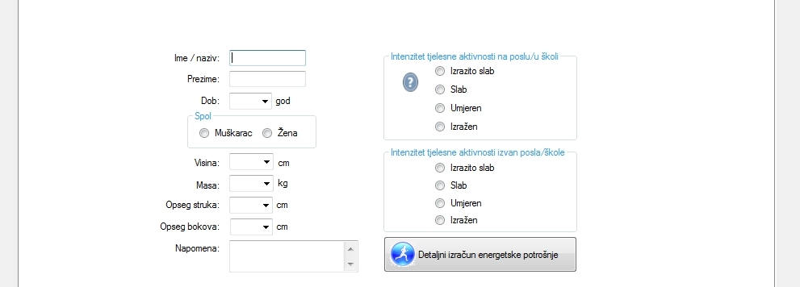

* Obavijest!
Od 01.01.2019 g. računalni program Program Prehrane 5.0 se povlaći iz prodaje. Zamjenjuje ga web aplikacija Program Prehrane Web.
Svi dosadašnji kupci godišnje ili trajne licence moći će i dalje nesmetano koristiti program.
Program omogućava utvrđivanje stanja uhranjenosti i energetske potrošnje pojedinca te izradu jelovnika utemeljenu na znanstvenim spoznajama na polju nutriconizma. Osmišljavanjem jelovnika korištenjem Programa Prehrane 5.0, prehrana krajnjih korisnika postaje uravnotežena i raznolika što se može zahvaliti činjenici da se izrada jelovnika bazira na preporučenom broju jediničnih serviranja svih skupina namirnica te njihovih energetskih, makro i mikronutiritivnih vrijednost. S obzirom da Program Prehrane 5.0 sadrži bazu od preko 660 namirnica i jela moguće je zadovoljiti zahtjeve većine korisnika po pitanju izbora namirnica. Nadalje, kad se govori o problemu prekomjerne tjelesne mase, preporuča se uz promjene prehrambenih navika, u svakodnevicu uključiti i dodatnu tjelesnu aktivnost. Program Prehrane 5.0 nudi podatke o energetskoj potrošnji za 428 tjelesnih aktivnosti. U sklopu programa dolazi i priručnik o pravilnoj i uravnoteženoj prehrani "Sam svoj nutricionist" u PDF formatu.
Više o karakteristikama i funkcijama programa pogledajte ovdje...

MISIJA: Program Prehrane 5.0 je nastao iz potrebe za izradom alata koji će nutricionistima i zdravstvenim djelatnicima ali i svima ostalima koji vode računa zdravoj i uravnoteženoj prehrani omogućiti brzu i jednostavnu izradu jelovnika te plana tjelesne aktivnosti.
POVIJEST: Program Prehrane je na tržištu već 10 godina, a do sada je doživio 6 verzija.
| Verzija | Godina izdanja | Tehnologija |
|---|---|---|
| Progra Prehrane 1.0 | 2008 | Visual Basic 4.0 |
| Progra Prehrane 2.0 | 2012 | Visual Basic 6.0 |
| Progra Prehrane 3.0 | 2012 | VB Net |
| Progra Prehrane 4.0 | 2013 | VB Net |
| Program Prehrane 5.0 | 2014 | VB Net |
| Program Prehrane Web | 2017 | .Net, Angular JS |
Instalacijom programa prihvaćate uvjete korištenja
* Obavijest!
Od 01.01.2019 g. računalni program Program Prehrane 5.0 se povlaći iz prodaje. Zamjenjuje ga web aplikacija Program Prehrane Web.
* Obavijest!
Od 01.01.2019 g. računalni program Program Prehrane 5.0 se povlaći iz prodaje. Zamjenjuje ga web aplikacija Program Prehrane Web.